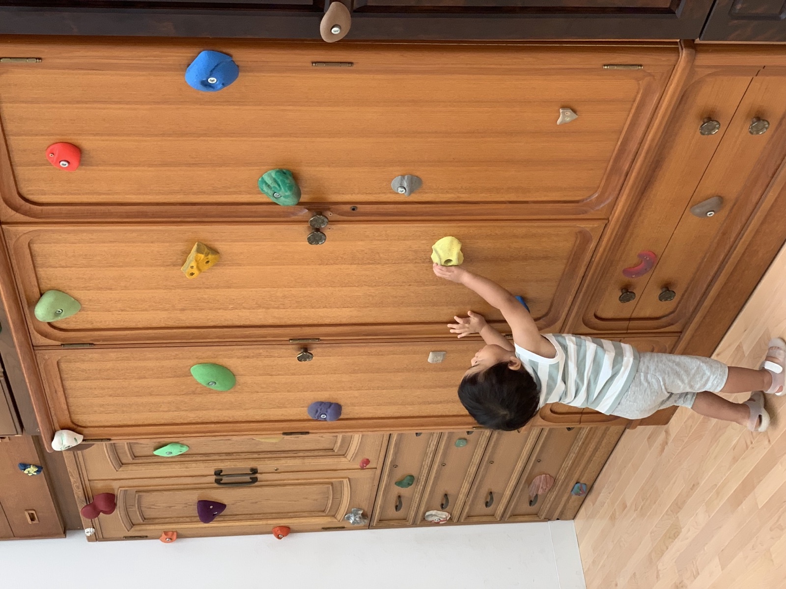
親子で気軽に楽しむ日
- 車または清澄白河・木場から来館
- 短めに展示を見る
- 100本のスプーンで昼食
- 疲れたら木場公園か館内休憩へ
Experience Menu 100 / Family Day
子どものために、大人が楽しむことを諦めなくてよい。塗り絵、展示、公園、食事を組み替えて、親子の休日を少し広くする。
Premise
美術館と博物館は、最もコストパフォーマンスの高い遊び場である。
子どもがいると、休日はどうしても「子どもが退屈しない場所」を探しがちになる。けれど、本当にほしいのは、子どもだけが楽しむ場所ではない。大人も自分の興味を手放さず、子どもも自分のペースで世界に触れられる場所だ。
東京都現代美術館は、その条件を満たしやすい。展示を見て、館内で食べて、疲れたら木場公園へ逃げる。予定通りでなくても、失敗にはならない。
しかも、子連れの現実にやさしい。美術館には駐車場があり、天気や荷物に左右されにくい。館内ではベビーカーを無料で借りられる。家族で遊園地や企画展へ行くと、人数分の入場券だけで想像以上に高く感じることがある。けれど、MOTコレクションは中学生以下無料なので、その負担を避けながら、まず一度連れていってみることができる。ここに、この場所を休日の選択肢として見抜く価値がある。
高価な体験でなくても、世界は十分に広がる。
Origin
大学生の頃、一番の遊び場は上野だった。国立科学博物館や上野動物園へ行けば、入館料や入園料は高くないのに、朝から夕方までいられる。恐竜、動物、剥製、標本、よくわからない展示。長く過ごすほど、自分の知見が少しずつ広がり、知らなかったものに出会う感覚があった。
だから、美術館や博物館を「高い場所」「特別な日に行く場所」とだけ見たくなかった。安く、長く、何度でも行けて、行くたびに発見がある。そういう場所を見抜けるかどうかで、休日の豊かさはかなり変わる。
一方で、美術館は動物園や博物館とは少し違うと思っていた。展示物には触れない。静かに見る。子どもが身体を動かして遊べる余地は少ない。現代美術館は、子連れにはまだ早い場所かもしれない、という感覚があった。
その認識を変えたのが、2019年の「あそびのじかん」だった。子どもが作品に近づき、登り、触り、つくり、遊びながら見る。美術館が、静かに鑑賞する場所だけではなく、身体で考えるプレイグラウンドになっていた。
「ポジティブな呪いのつみき」や「タノニマス」のような作品は、子どもの反応を通して、大人側の見方もほどいてくれる。美術館もまた、子どもの遊び場になり得る。そのことに気づけたのは大きかった。
2019年の「あそびのじかん」は過去の企画展です。当時の条件を現在の展示内容としては扱わず、過去の体験記として記載しています。
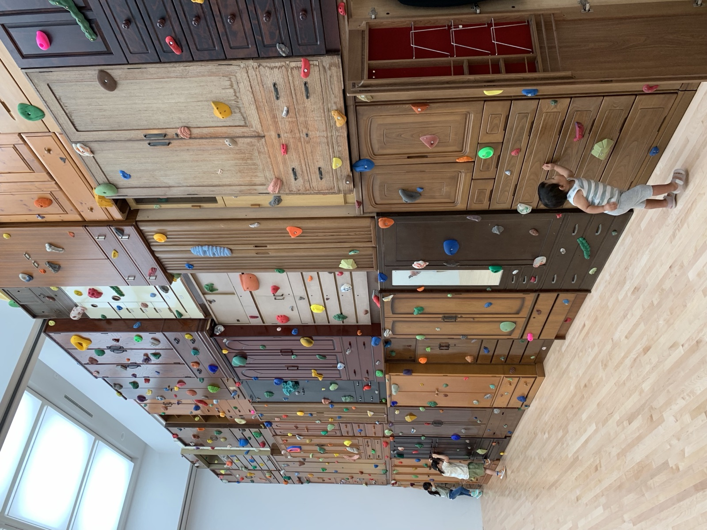
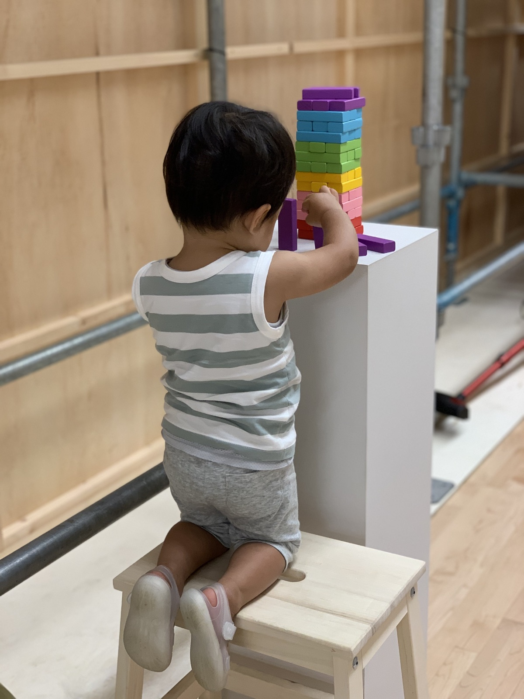
Model Course

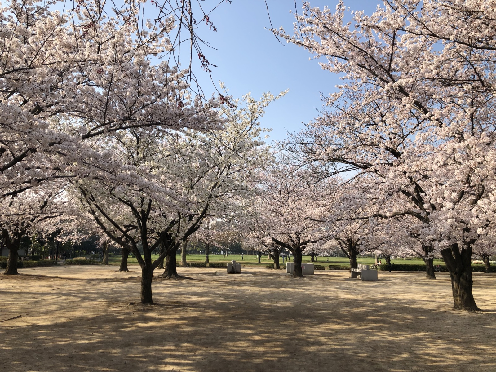
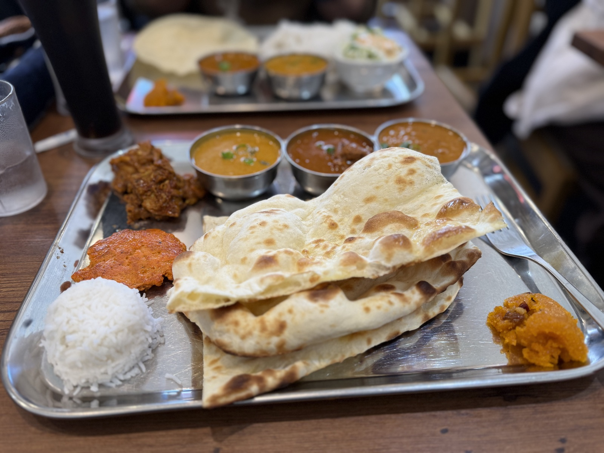
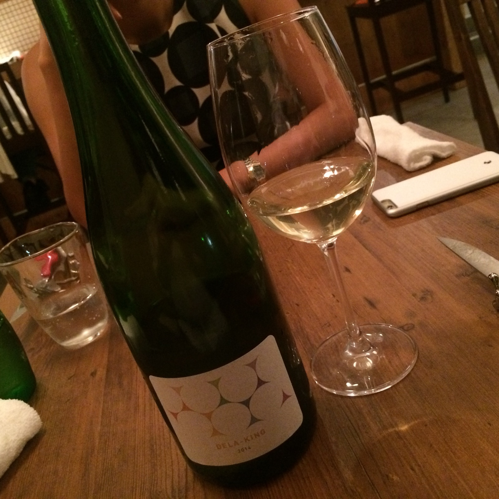
Museum Walk
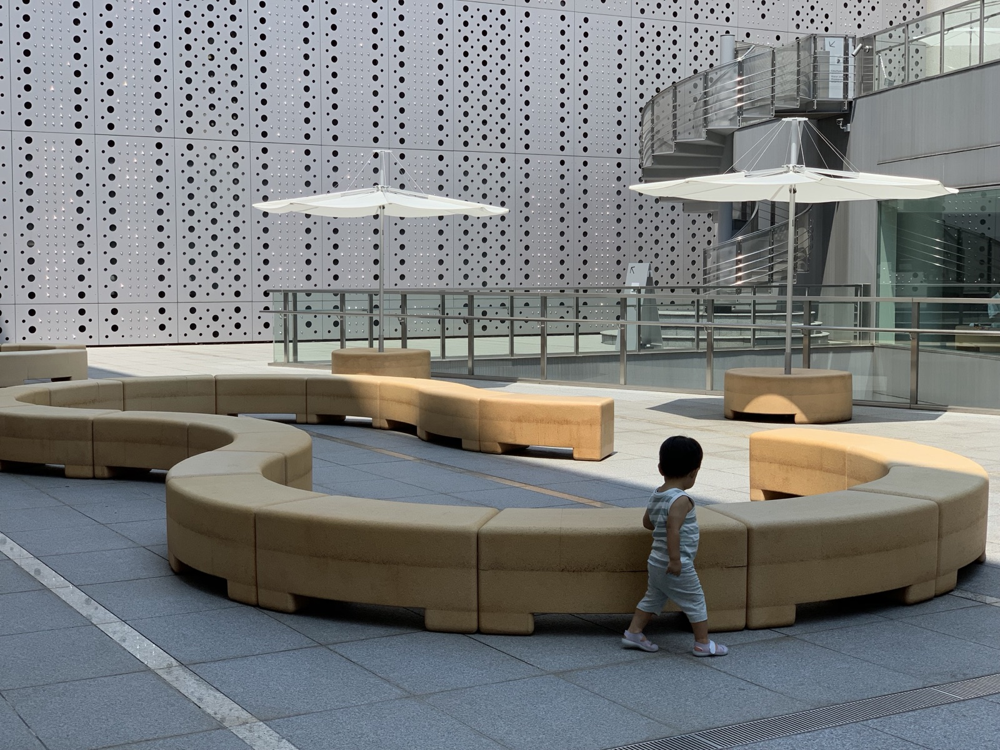
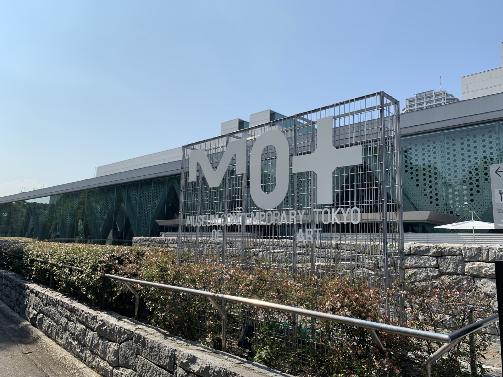
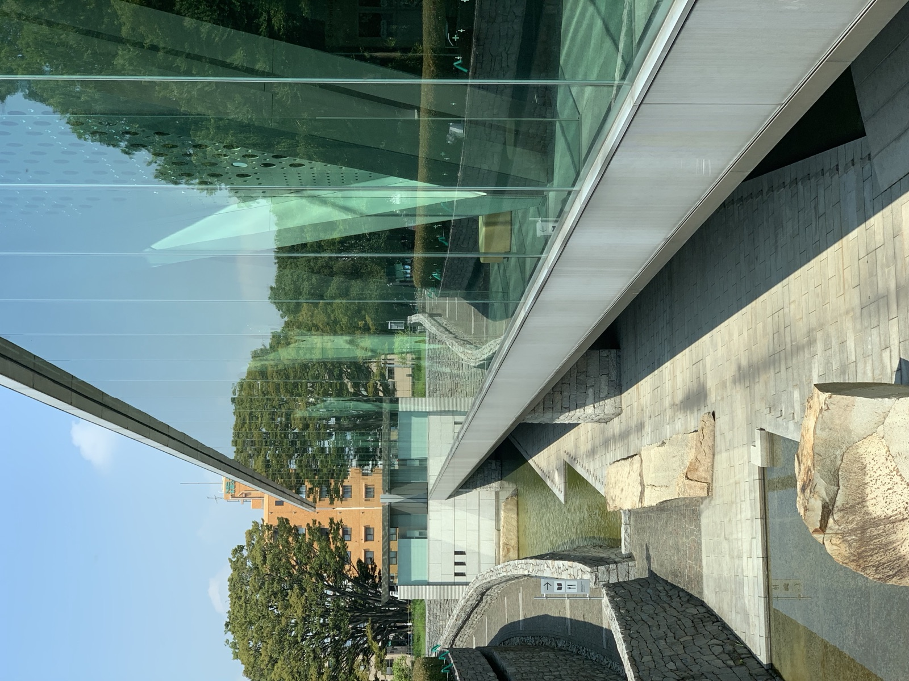
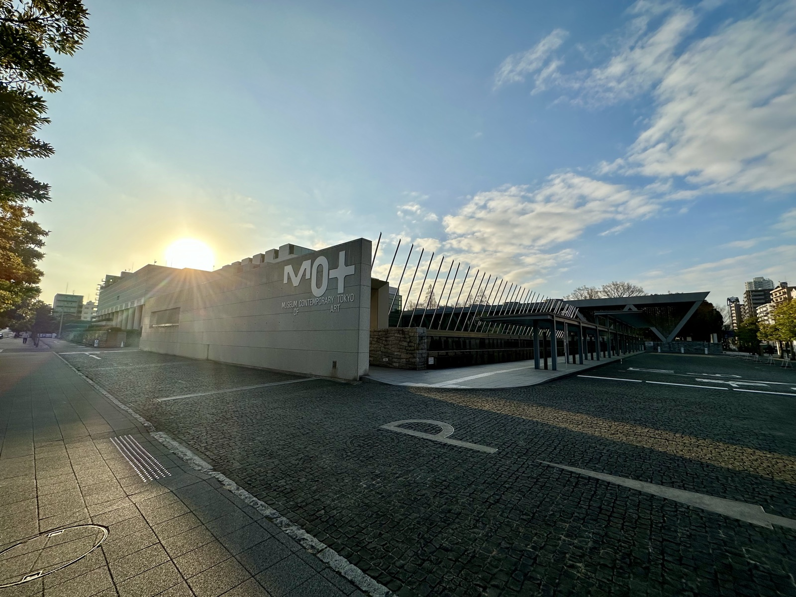
Food Choices
東京都現代美術館が家族向けに良い理由は、展示だけではない。館内に100本のスプーンがある。ここは、単に子ども用メニューがある店ではなく、大人もちゃんと行きたくなるレストランでありながら、子どもを歓迎する設計になっている。
公式のコンセプトは「コドモがオトナに憧れて、オトナがコドモゴコロを思い出す。」というもの。子どもは、大人と同じ料理をハーフサイズで食べることで、少しだけ大人の世界へ踏み出せる。親は、子どものために自分の食事を諦めなくていい。
月齢に合わせた離乳食が無料なのも大きい。家族全員分の外食費が積み上がる場面で、赤ちゃんの食事が無料で用意されることは、コスト面でも心理面でも効く。しかも、席では塗り絵と色鉛筆が用意され、メニューを待つ時間そのものが子どもの遊びになる。
料理を待つ時間に、子どもが塗り絵をしている。大人は少しだけグラスを傾ける。スタッフも親子が来ることを前提に動いているから、子ども連れで肩身が狭い感じになりにくい。親は親で楽しみ、子どもは子どもで少し大人へのステップを味わう。その同居が、この店の強さだと思う。
混んでいる日は、二階のサンドイッチを持って木場公園へ行けばいい。もう少し大人寄りにするなら、ナンディニ清澄白河店や清澄白河フジマル醸造所を候補にできる。
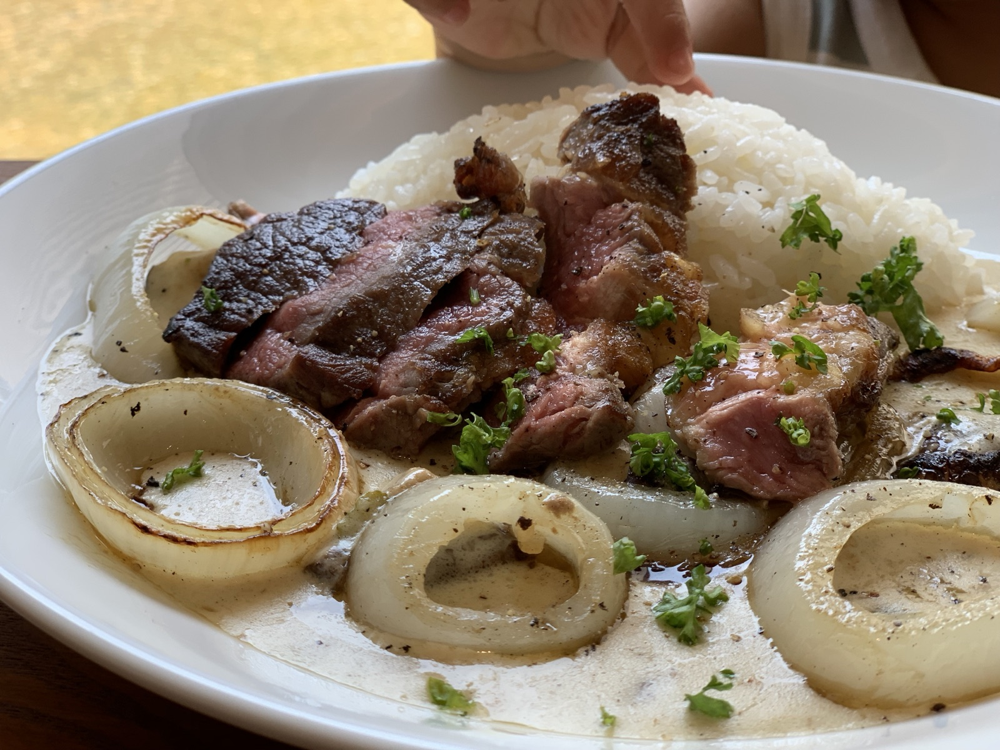
Evaluation
子どもの反応を通して、大人自身の興味も見える。美術館は静かな鑑賞だけではないと気づける。
展示、100本のスプーン、二階のサンドイッチ、木場公園、清澄白河の食事を状況で組み替えられる。
美術館や博物館を、特別な場所ではなく、日常の選択肢として子どもに渡せる。
Family Support
MOTコレクションは中学生以下無料。公園を組み合わせると、支出を抑えながら過ごしやすい。
駐車場があり、清澄白河・木場からもアクセスできる。小さな子ども連れでも計画を立てやすい。
館内レストラン、カフェ、ベビーカー貸出、授乳室、木場公園があり、疲れたらすぐ切り替えられる。
Before You Go
このページの料金や営業時間、ベビーカーの貸出数などは、2026年6月時点の情報。変わることがあるので、お出かけ前に各施設の公式サイトで最新を確かめておくと安心。
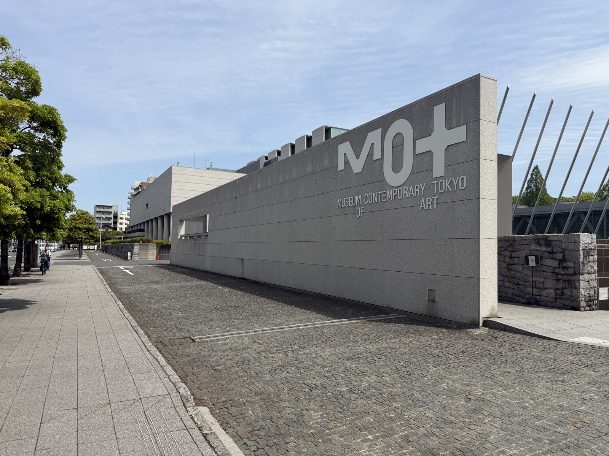
Information
所在地は東京都江東区三好4-1-1。開館は10:00〜18:00、展示室への入場は閉館30分前まで。休館日は月曜（祝日の場合は翌平日）。
MOTコレクションは中学生以下無料。企画展は展示ごとに料金が異なる。
美術館地下に約90台。料金は1時間300円、以降30分ごとに150円で現金のみ。車高は2.1m以下まで。
ベビーカーは6台を無料で貸出。授乳室はB1Fと1F、おむつ替え台は2F。館内3か所に100円リターン式のロッカー。
B1F。11:00〜18:00（ラストオーダー17:00）、月曜定休。離乳食は無料、塗り絵と色鉛筆の貸出もある。
2Fカフェ＆ラウンジ。店内利用とテイクアウトに対応。木場公園への切り替えに使いやすい。
清澄白河の南インド料理店。2015年創業で、美術館のすぐそば。大人も満足するスパイス料理がそろう。
江東区三好のワイナリー併設レストラン。ランチ11:30〜14:00、ディナー17:00〜（L.O.21:30）。月・火休、予約可。
Links
開館時間、観覧料、展示情報を確認する。
開館時間・観覧料 外部サイト駅からのルート、車での来館、駐車場の台数や料金を確認する。
アクセスを見る 外部サイトベビーカー貸出、授乳室、ロッカーなどを確認する。
設備を見る 外部サイト100本のスプーン、二階のサンドイッチ、ミュージアムショップを確認する。
館内施設を見る 外部サイト店舗営業時間、子ども向けサービス、メニューを確認する。
店舗ページを見る 外部サイト営業時間、メニュー、店舗情報を確認する。
公式サイトを見る 外部サイト営業日、営業時間、予約可否を確認する。
店舗一覧を見る 外部サイト2019年の過去企画展として確認する。
過去展を見る 外部サイトほかの体験資産レポートへ戻る。
一覧へ戻る 内部リンク美術館、食事、公園。どれか一つだけでも成立するし、全部できなくても失敗ではない。親が楽しむ姿も、子どもに渡せる体験の一部になる。